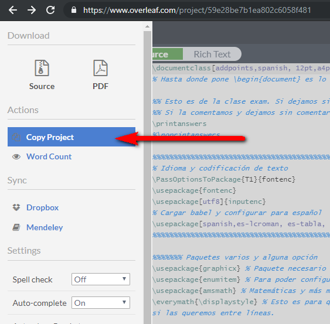

Escribir matemáticas
LaTeX
LaTeX es algo que genera sentimientos encontrados. Hay gente que lo ama y gente que lo odia. Pero su sintaxis para escribir expresiones matemáticas es muy, pero que muy cómoda. No vamos aquí a aprender los entresijos más avanzados, sino que vamos a centrar nuestra atención en utilizar un editor online con una plantilla para hacer exámenes. De esta manera, conoceremos la estructura de un documento de LaTeX a la vez que nos hacemos con algo que podemos utilizar mañana mismo en el colegio o en el instituto.
Utilizaremos el estupendo editor en línea OverLeaf (antiguo ShareLaTeX), a partir de la plantilla para examen con la clase exam que hemos hecho pública para este curso (ese regalo que se lleva el lector). Comentemos rápidamente sobre una captura qué es lo que nos vamos a encontrar en la interfaz de OverLeaf, que sería muy similar si usamos editores offline, salvo las opciones de colaboración (entre los que podemos recomendar Texmaker o TexStudio).
Si nos fijamos en la plantilla, que exponemos un poco más abajo (aunque se puede ver directamente en OverLeaf), veremos que un documento simple de LaTeX se divide en:
- Preámbulo
- Cuerpo del documento
La primera línea del preámbulo siempre es la definición de la clase de documento \documentclass[addpoints,spanish, 12pt,a4paper]{exam} y llega hasta donde pone \begin{document}, que es donde comienza el cuerpo. En el preámbulo se configuran aspectos tales como el idioma, lo que se quiere que aparezca en las cabeceras y pies de página, etc. y donde se incluyen paquetes adicionales si queremos hacer alguna birguería. Hay algunos paquetes que siempre los pondremos en nuestro preámbulo, como graphicxpara poder incluir imágenes y redimensionarlas.
La plantilla está comentada (cuando se escribe en una línea %, todo lo que viene después es un comentario que no se renderiza), de forma que se explica la estructura y lo que se va haciendo.
\documentclass[addpoints,spanish, 12pt,a4paper]{exam}
% Hasta donde pone \begin{document} es lo que se conoce como preámbulo (preamble)
%% Esto es de la clase exam. Si dejamos sin comentar \printanswers, se mostraran las soluciones.
%% Si la comentamos y dejamos sin comentar \noprintanswers, pues no se muestran las soluciones.
\printanswers
%\noprintanswers
%%%%%%%%%%%%%%%%%%%%%%%%%%%%%%%%%%%%%%%%%%%%%%%%%%%%%%%%%%%%%%%%%%%%%%%%%%%%%%%%%%
% Idioma y codificación de texto
\PassOptionsToPackage{T1}{fontenc}
\usepackage{fontenc}
\usepackage[utf8]{inputenc}
% Cargar babel y configurar para español
\usepackage[spanish,es-lcroman, es-tabla, es-noshorthands]{babel}
%%%%%%%%%%%%%%%%%%%%%%%%%%%%%%%%%%%%%%%%%%%%%%%%%%%%%%%%%%%%%%%%%%%%%%%%%%%%%%%%%%
%%%%%%% Paquetes varios y alguna opción
\usepackage{graphicx} % Paquete necesario para incluir imágenes, cambiarles el tamaño, etc.
\usepackage{enumitem} % Para poder configurar las listas
\everymath{\displaystyle} % Esto es para que las expresiones se vean... grandes, que resulta diferente de si las queremos entre líneas.
%%%%%%%%%%%%%%%%%%%%%%%%%%%%%%%%%%%%%%%%%%%%%%%%%%%%%%%%%%%%%%%%%%%%%%%%%%%%%%%%%%
%%%% Cosas a configurar de la clase EXAM %%%%
\author{Pablo Beltrán Pellicer}
\pagestyle{headandfoot}
\runningheadrule
\extraheadheight{2cm}
\firstpageheader{}
{\hspace*{-1cm}\includegraphics[height=1.6cm]{img/\string"logoDGA\string".jpg}\hspace*{10cm}\includegraphics[height=1.6cm]{img/\string"logocatedu\string".png}\\
IES CATEDU, Aragón\\
Examen de Matemáticas - Tema 2 - Polinomios\\15 de octubre, 2017
}
{}
\runningheader{Matemáticas}
{Examen del tema 2}
{15 de octubre, 2017}
\firstpagefooter{}{{\tiny IES CATEDU, Aragón}}{}
\runningfooter{}{{\tiny IES CATEDU, Aragón}}{Página \thepage\ de \numpages}
\pointpoints{punto}{puntos}
\bonuspointpoints{punto extra}{puntos extra}
\hqword{Pregunta}
\hpword{Puntos}
\hsword{Calificación}
\renewcommand{\solutiontitle}{\noindent\textbf{Solución:}\par\noindent}
\pointformat{(\emph{\thepoints})}
\bonuspointformat{(\emph{\thepoints})}
\pointsinrightmargin % Para poner las puntuaciones a la derecha. Se puede cambiar. Si se comenta, sale a la izquierda.
\marginpointname{ \emph{\points}}
%\bracketedpoints
%%%%%%%%%%%%%%%%%%%%%% FIN DEL PREÁMBULO %%%%%%%%%%%%%%%%%%%%%
\begin{document}
\vspace{0.1in} %espacio vertical
\makebox[\textwidth]{Nombre:\enspace\hrulefill}
%%%%%%%%%%%%%%%%%%%%%%%%%%%%%%%%%%%%%%%%%
% Tabla para anotar la calificación
%%%%%%%%%%%%%%%%%%%%%%%%%%%%%%%%%%%%%%%%%
\begin{center}
%\resizebox{\textwidth}{!}{\gradetable[h][questions]} % Esto es por si la tabla sale muy grande, para ajustarla al ancho
\gradetable[h][questions]
\end{center}
\vspace{0.1in} % Espacio vertical
\begin{questions} % Comenzamos con las preguntas del examen
% Entre corchetes se pone la puntuación de cada una, y luego el enunciado. Para pasar de línea, simplemente pondremos //
%Pregunta con apartados
\question Calcula:
\begin{parts}
\part[1] $2+2=$
\part[2] $\frac{1}{2}+\frac{3}{4}=$
\end{parts}
\begin{solution} % Aquí ponemos la solución, es opcional.
\begin{parts}
\part $4$
\part $\frac{5}{4}$
\end{parts}
\end{solution}
\question[1 \half] Una pregunta sin apartados.
\question[1] Otra pregunta.
\question[1 \half] Otra pregunta más.
\question[3] Una pregunta más complicada.
\end{questions}
\end{document}
Utilizando la plantilla con OverLeaf
La forma más sencilla de introducirse en LaTeX, que además nos puede venir bien como docentes para elaborar exámenes o tareas, es a través de un editor online como OverLeaf. En primer lugar, nos creamos una cuenta en www.overleaf.com. Después, tenemos dos métodos:
Método 1
- Abrir el enlace de la plantilla:
- Esta plantilla no se puede modificar directamente (sería un jaleo en este caso, pero muy útil si estamos elaborando un documento de LaTeX compartido entre varios compañeros). Por lo tanto, hay que hacer una copia:
- Elegimos el nombre que queramos y ya lo tendremos disponible en nuestros proyectos y podremos modificarlo a nuestro antojo.
Método 2
- Bajar la plantilla (https://www.overleaf.com/project/59e28be7b1ea802c6058f481), desde el menú de la izquierda. Descargar-> Fuente. Se bajará un archivo zip comprimido. Lo descomprimimos y veremos un fichero
main.texy un directorio/imgcon las imágenes de los logos. - Crear una cuenta en https://www.overleaf.com (es gratuito). Realmente, con este método podría emplearse cualquier editor/compilador de LaTeX.
- Crear un nuevo proyecto y subir los archivos de la plantilla. Es decir, el
main.tex(que reemplaza al creado por defecto) y las imágenes en su carpeta/img. - Modificar la plantilla al gusto de cada uno. Por ejemplo, añadiendo las preguntas de examen y sus soluciones, o cambiando los logos por los de tu instituto. Con esto último, debemos andar con atención, ya que si cambiamos los ficheros, también tendremos que cambiar los nombres de los mismos dentro de la plantilla.
LaTeX en MS Word
Sigue teniendo su cosa escribir matemáticas en MS Word, pero allá vamos.
Aproximadamente desde verano de 2017, ya se pueden escribir ecuaciones en la sintaxis de LaTeX en documentos de MS Word. Para Powerpoint hay una triquiñuela, pero no hemos conseguido hacerla funcionar con el paquete de idioma español, así que lo dejaremos para otro momento y vamos a centrarnos ahora en lo que funciona desde la versión de Office 1707 (Build 8326.2058). Y esto es una novedad, a la que tampoco se le ha dado mucha publicidad, pero para la que existía una potencial comunidad de usuarios que la esperaban como agua de mayo. Facilita enormemente, por ejemplo, el copy-paste de fórmulas de otros sitios. Además, la sintaxis de LaTeX puede parecer extraña al principio, pero es bastante más eficaz para escribir ecuaciones y fórmulas que el seleccionado manual con el ratón a través de múltiples menús.
Cómo funciona
1- Insertar ecuación y seleccionar modo {}LaTeX
2- En el cuadro de la ecuación, escribir (o pegar) en sintaxis LaTeX la expresión que deseemos. Por ejemplo: \frac{a+b}{c+d}
3- Para ir alternando habrá que darle a "Convertir". Si convertimos a "Profesional", veremos el resultado:
4- Mientras que si convertimos a "Lineal", volveremos a ver la expresión LaTeX que hay detrás de ese renderizado, pudiendo modificarla de nuevo.
Cosas interesantes
Si copiamos una fórmula de estas y pegamos en otra aplicación (editor de LaTeX o un simple notepad), lo que aparecerá será la expresión LaTeX. Maravilloso. Aunque sería todavía mejor si Word permitiese entrar en el modo ecuación tecleando algún comando especial tipo\[. Todo llegará, supongo. Y otra cosa que tampoco está habilitada en el editor de ecuaciones en modo LaTeX es el empleo de tags como \begin o \end.
Y limitaciones
A día de hoy (octubre de 2017), y con la última versión posible de Word, nos encontramos con situaciones un poco marcianas. Son situaciones que recuerdan a esos vídeos de YouTube en los que cogen una canción en inglés, la traducen con Google Translate a otros idiomas y luego de vuelta al inglés. Y el resultado, bueno, el resultado os lo podéis imaginar.
El minimalismo al rescate
Y en lo que a escritura se refiere, tiene nombre propio: markdown. De hecho, este libro está hecho con Gitbook, que sigue ese sistema. En lo que a matemáticas se refiere, se puede escribir esto de aquí:
sin más que escribir esto otro entre signos de dólar:
e=\lim_{n\to\infty} \left( 1+\frac{1}{n}\right)^n
Si es la primera vez que ves la sintaxis de LaTeX para expresiones matemáticas, te puede sonar raro. Pero enseguida te habitúas. Y respecto a la sintaxis de markdown, resulta tan simple que pronto te ves escribiendo palabras entre dos asteriscos para activar la negrita.
**negrita**
Hay un buen puñado de editores de markdown. En el fondo, basta con un editor de texto plano, como el bloc de notas de toda la vida o el magnífico Notepad++. Pero es que no hace falta. Los editores especializados en Markdown te permiten ver directamente el resultado de lo que escribes. Por ejemplo, esta es la barra de Gitbook Editor que veo arriba del todo mientras escribo estas líneas:
¿Para qué más? Lo simple es bello. Y si quieres cambiar el estilo, también hay plantillas y formas de hacerlo. A continuación, vamos a ver un poquito en profundidad un editor que, aunque se encuentra en versión beta todavía, es increíble. Por simple. Se trata de Typora.
Typora
Descarga e instalación
En la página web de Typora podemos descargar el programita en cuestión. Si tenemos Windows o Mac se nos bajará un ejecutable, mientras que si tenemos Linux, en la página vienen las instrucciones para que se mantenga actualizado.
Aunque para exportar a pdfy htmlno hace falta, para poder disfrutar de todas las capacidades de exportación, hay que instalar pandoc.
Aspecto del entorno
Puede parecer simple, porque lo es. Observemos que todas las opciones son accesibles desde los menús (o con atajos de teclado) y que tampoco hay que estar tecleando en markdown (aunque acelera el asunto).
Como podemos ver, tenemos las opciones básicas de cualquier editor, pero con una pequeña diferencia.
Lo que vemos no es exactamente el documento para imprimir
Cuando usamos Typora, ocurre un poquito lo mismo que cuando utilizamos LaTeX. Lo que vemos por pantalla no es WYSIWYG (What You See Is What You Get, lo que ves es lo que obtienes). No es tan exagerado como LaTeX, pero hemos de ser conscientes de que el posicionamiento de los párrafos, el interlineado y demás opciones de formato irían aparte. Es decir, si queremos preparar un examen con preguntas para nuestros alumnos, por ejemplo, podemos optar por:
- Que cada pregunta sea un item de una lista numerada.
- Que cada pregunta comience por un título (heading), como «Pregunta 3»
El estilo por defecto es más que suficiente para empezar a probar este sistema. La filosofía de este tipo de sistema de escritura es que te permite centrarte en el contenido en lugar de en el formato.